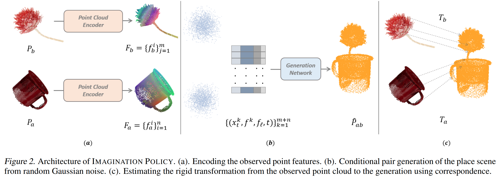
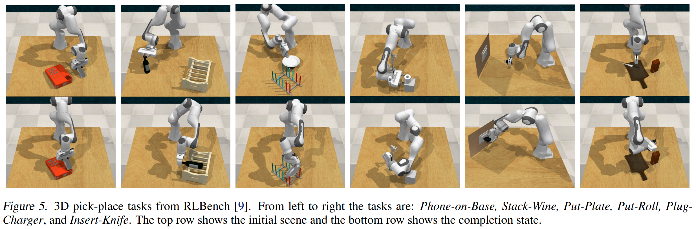

Fourier Transporter: Bi-Equivariant Robotic Manipulation in 3D
Abstract
Many complex robotic manipulation tasks can be decomposed as a sequence of pick and place actions. Training a robotic agent to learn this sequence over many different starting conditions typically requires many iterations or demonstrations, especially in 3D environments. In this work, we propose Fourier Transporter ($\text{FourTran}$) which leverages the two-fold $\mathrm{SE}(d)\times \mathrm{SE}(d)$ symmetry in the pick-place problem to achieve much higher sample efficiency. $\text{FourTran}$ is an open-loop behavior cloning method trained using expert demonstrations to predict pick-place actions on new environments. $\text{FourTran}$ is constrained to incorporate symmetries of the pick and place actions independently. Our method utilizes a fiber space Fourier transformation that allows for memory-efficient construction. We test our proposed network on the RLbench benchmark and achieve state-of-the-art results across various tasks.
Introduction
Sample efficiency: Robot data is notably more costly to acquire compared to that in computer vision and natural language processing (NLP), primarily due to two key factors: 1). Robot data often encompasses a combination of visual observations, goal descriptions, and corresponding actions, rendering its collection inherently more resource-intensive. 2). Unlike image and NLP data, which often leverage shared common sense understanding across different cultures, robot data collected within a specific setting may lack transferability to other environments. This disparity complicates the development of Artificial General Intelligence (AGI) in robotics, as data collected for one scenario may not readily apply to another. Given the expense associated with acquiring robot data, a pressing question arises: can we derive effective robot policies with minimal demonstration? Presently, the emphasis lies on sample efficiency in robotics. This research specifically targets sample efficiency in the manipulation of pick-and-place tasks, aspiring to formulate a robust 3D manipulation policy with fewer than 10 robot demonstrations.
Symmetry: How could we achieve sample efficiency? There are many ways to achieve it but symmetry is one of the most intersting methods. What is symmetry? It appears in everyone's daily life. For example, a person can grasp their coffe mug by the hanle even the position and orientation of the mug change every time. If the robot learns how to grasp the mug by the handle, could we generate the learned pick knowledge when there is a rotation or translation on the mug? If we can constrain such property inside the policy learning, it is easy to see that we can achieve better sample efficiency. Data augmentation provides a way to force the neural network to learn the symmetry from the data. However, could we have a smart system that can satisfy the symmetry in nature? This paper provide a general solution to levering the symmetries in manipulation pick and place problem.
Action in 3D: Previously, there are many works on pick and place in 2D. However, 3D policy learning is way more hard due to the large action space. The action is often formatted as the (translation, orientation). In 2D case, orientation is often limited to rotations along one axis, e.g., the axis perpendicular to the image plane. 10 degree discretization in 2D results in 36 differnt rotations. However, in 3D, 10 degree discretization along each of the three axises gives us $36^3=46456$ rotations. We can imagine the action space of $R^{3}\times SO(3)$ is very large. The translation component is easy to represent, e.g., voxel, pixel, filed. However, how should we model the $SO(3)$ action distribution in 3D? Since it's hard to model the 46456 rotations directly, one can use three 36-dimension vectors for each axis and the best action is evaluated by the multiplying the best rotation along each axis. It does save the computation load, but $SO(3)$ rotations are very very intertwined! Just consider that we infer the pick location and consider the x, y and z independently. It could barely work if the distribution is unimodal and the signal is very strong. However, robot data is very diverse since they are many optimal solutions, e.g., the robot can grasp the mug handle with many differnt poses. Could we encode the entire $SO(3)$ distribution efficienctly? Yes, there are some basis functions defined in $SO(3)$ space and this work use the coefficients of $SO(3)$ basis functions, i.e., Winger-D matrix, to encode the $SO(3)$ distribution. The process of transforming a distribution over 3D rotations to coefficients of Winger-D matrix is called Fourier transform. It is the same as transforming spatial singal to frequency domain.
Method Description
Pick and Place: Many complex robotic manipulation tasks can be decomposed as a sequence of pick and place actions. This paper focuses on behavior cloning for robotic pick-and-place problems. The objective of $\text{FourTran}$ is to learn a policy $p(a_t|o_t)$ where the action $a_t = (a_{\text{pick}}, a_{\text{place}})$ has pick and place components and the observation $o_t$ describes the current state of the workspace. Our model factors the policy $p(a_{t},o_{t})$ as
$p(a_{t}|o_{t}) = p(a_{\text{place}}|o_t,a_{\text{pick}}) p(a_{\text{pick}} | o_t)$
Please note the place action is conditioned on the pick action. We parameterize $p(a_{\text{pick}} | o_t)$ and $p(a_{\text{place}}|o_t,a_{\text{pick}})$ as two separate neural networks.
Pick Symmetry: $\text{FourTran}$ analyzes the pick symmetry and the place symmetry following (Huang et al., 2023). Intuitively, a rotation $g$ on the object to be grasped should transform its optimal picking pose $(T_{\text{pick}},R_{\text{pick}})$ accordingly. The action transformation can be described as a rotation on the pick location and rotation on the pick orientation, i.e., $(\rho_1(g)T_{\text{pick}}, \rho_1(g)R_{\text{pick}})$. The $\rho_1(g)$ is a tranditional 3-by-3 rotation matrix associated with $g$. $\text{FourTran}$ represent $p(a_\text{pick} | o_t)$ as a steerable field $\mathbb{R}^d \to \{ SO(3) \to \mathbb{R}\}$ with equivariant convolution layers. Considering a $128 \times 128 \times 128$ voxel grid, there is a set of coefficients of Winger-D Matrix above each voxel. A rotation or translation on $o_t$ will change the steerable field accordingly.
Place Symmetry: The place action is involved with the picked object and the placement. If there is a rotation $g_1$ acting on the pick object and a rotation $g_2$ acting on the placement target, the optimal action to place the picked object is transformed from $(T_{\text{place}}, R_{\text{place}})$ to $(\rho_1(g_2)T_{\text{place}}, \rho_1(g_2)R_{\text{place}}\rho_1(g_1^{-1}))$. The place symmetry is sometimes referred to as bi-equivariance (Ryu et al., 2022). This is illustrated in figure below.

Independent rotations of the gear ($g_1$) and the slot ($g_2$) result in a change ($a'=g_2 a g_1^{-1}$) in the requisite action needed to perform the insertion. $\text{FourTran}$ realizes the bi-equivariance with a transporter-based architecture (Zeng et al., 2021) shown in Figure 2. Please check our paper for detailed descriptions and proofs.
Results
We evaluate $\text{FourTran}$ on 5 tasks from RLbench and baseline it with 3 strong baselines. The task and results are shown in the following. Besides 3D experiments, we also includes several interesting 2D experiments. Please check our paper for more details.

Citation
@inproceedings{
huang2024fourier,
title={Fourier Transporter: Bi-Equivariant Robotic Manipulation in 3D},
author={Haojie Huang and Owen Lewis Howell and Dian Wang and Xupeng Zhu and Robert Platt and Robin Walters},
booktitle={The Twelfth International Conference on Learning Representations},
year={2024},
url={https://openreview.net/forum?id=UulwvAU1W0}}